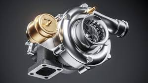

Turbocharger

Turbocharging
-
Turbocharger Kit: Custom or off-the-shelf kits designed to fit various types of engines.
-
Engine Management: Upgrading the engine control unit (ECU) or adding a standalone engine management system to handle the increased power and fuel requirements.
-
Cooling: Upgrading the cooling system, including intercoolers to manage the increased heat generated by turbocharging.
-
Strengthening Components: Enhancing engine internals, such as pistons and rods, to handle the additional stress and power.